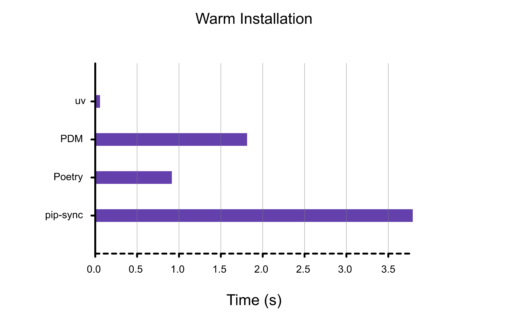

Note: This post assumes previous Python package management knowledge, mainly virtualenv and pip.
uv for fast and versatile package management in Python
This post is probably only interesting to you if you program in Python.
If you’re not using conda, you’ve probably resorted to pip to manage your packages.
If you’ve worked in multiple projects at the same time, it’s quite likely you’ve used virtualenv at some point, or other virtual environment alternatives like pipenv.
Pros and cons
- Pros:
As of 2024, a new, Rust-written, Python package and project manager has been developed. It aims to substitute the functionality of many other Python package managers. Its name is uv, developed by Astral.
uv allows you to create and manage a virtual environment, install or remove packages or different Python versions and much more within a single tool.
And most importantly, it does it crazy fast, here are their own benchmarks for installing Trio’s dependencies with a warm cache. 
Hence, its two main strengths are versatility and speed.
I’d like to emphasize how versatile uv is by citing their own words:
🚀 A single tool to replace pip, pip-tools, pipx, poetry, pyenv, twine, virtualenv, and more.
Edit March 2025: After some use of the tool, I’ve also found an additional advantage. It’s quite neat for managing orphaned dependencies. Imagine you install a python package like openai but later in the project you realize you don’t need it. You uninstall it, but its dependencies are left hanging, some might be relevant dependencies for other packages in your project, whereas others don’t really matter anymore.
How do you distinguish which packages to erase? With pip only the openai package gets uninstalled, but the others are left to you to uninstall manually. However, uv does this automatically every time it locks the project (e.g. uv init, uv run, we’ll see the commands later). Hence, if you run uv remove openai and then execute Python, the hanging dependencies will be resolved.
- Cons:
Right now, the only main con that I can think of is that the tool is owned by Astral, and even though it’s open source and free to use now, maybe in the future its commercial terms might change.
Integrating uv into existing workflows
The best in-depth article I’ve read about it is this one. Particularly, the sections that I find the most useful for reference are the cheatsheets; one for uv vs existing tooling, and then the native uv workflow.
To build upon it, here I’ll outline some commands to create a quick reference cheatsheet based on my experience with the package.
Here are the commands I promised. First for integrating UV into your current use of pip or virtualenv. Then, on how to use native uv when setting up a completely new project.
uvinstallation:
- macOS/Linux:
curl -LsSf https://astral.sh/uv/install.sh | sh- Windows:
powershell -ExecutionPolicy ByPass -c "irm https://astral.sh/uv/install.ps1 | iex"- pip:
pip install uv- Installing Python:
uv python install 3.12- Managing virtual environments:
- Previously:
python3.12 -m venv /path/to/environment- Currently:
uv venv /path/to/environment --python 3.12- Installing a package:
- Previously:
pip install flask- Currently:
uv pip install flask- Building package dependencies (requirements.txt) file:
- pip-tools:
pip-compile requirements.in -o requirements.txt- uv:
uv pip compile requirements.in -o requirements.txt*) BONUS: Exporting package dependencies from native uv to requirements.txt:
Sometimes you might find yourself needing requirements.txt of a project you’ve built with uv (at least I’ve found myself in that situation) but you’re not familiar with the use of of requirements.in files. You can use several commands to export all your dependencies from your lockfile (uv.lock):
This is the native and preferred way as it relocks the project before exporting, this means that new packages added to the pyproject.toml file get synced into the uv.lock file and the virtual environment where Python lives, so it’s slightly more trustworthy than uv pip freeze.
uv export --no-hashes --format requirements-txt > requirements.txtNote that –no-hashes is just used to avoid showing the exact hashes of the package download, remove it if needed.
OR
uv pip freeze > requirements.txtUsing native uv:
Initializing repo:
uv init repoThat will create a
pyproject.tomlfile, which will handle the package requirements of the project. It also automatically creates a virtual environment.Adding package dependencies:
uv add(e.g., flask)You can also manually specify packages in
pyproject.toml. There are many options to specify the source, or specify a different package version depending on the OS you’re using. For more info check the uv add docs.Removing package dependencies:
uv removeSame as the previous one but for removing dependencies from the toml file. Here uv shines for its quick conflict resolution.
Installing dependencies:
uv sync
This part involves a two-step process. First, it locks the project dependencies from pyproject.toml into a lockfile (uv.lock), which has a complete detail about all the direct and indirect dependencies of the project. After that, it installs (or removes) the changes in dependencies into the virtual environment, setting everything up to run your project with the exact set of dependencies you’ve specified.
- Running a python file:
uv run(e.g., app.py)
This one is similar to running python script.py, but first it run uv sync to make sure that all dependencies are installed and up to date before running.
If you want to run Python interactively, you can specify uv run python
- Checking current dependencies tree:
uv tree
This is a very short list of commands I’ve found useful so far, for more information please check out the blog I’ve mentioned above and feel free to reach me out if you’d like me to add something.
In next posts I might expand on the use of uv or explore Ruff, a very fast linter from the same developers.
Thanks for reading and I hope you found this useful!